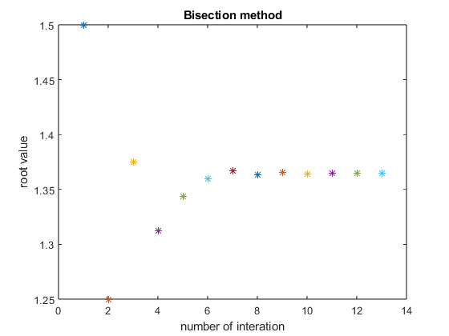
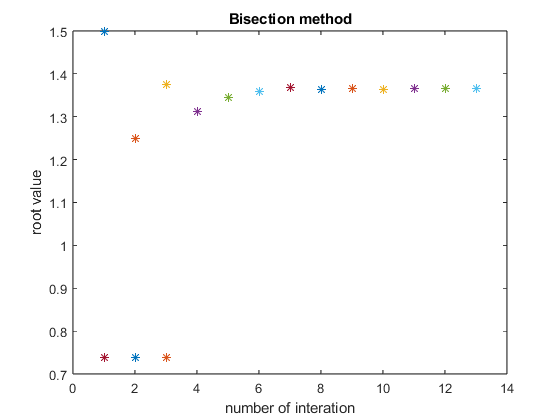

Contents
Q1
f=@(x) x^3+4*x^2-10; A=[1 2]; a=A(1); b=A(2); exact=1.36523; n=0; while true c=(a+b)/2; if f(a)*f(c)<0 b=c; elseif f(b)*f(c)<0 a=c; elseif f(a)*f(c)==0 fprintf('the exact answer found x=%f\n',c) elseif f(b)*f(c)==0 fprintf('the exact answer found x=%f\n',c) else error('process failed') end n=n+1; fprintf('at %d th interation, c=%f\n',n,c) plot(n,c,'*') xlabel('number of interation') ylabel('root value') title('Bisection method') hold on if abs((b-a)/2)<10^(-4) fprintf('root found: %f\n',c) break end end
at 1 th interation, c=1.500000 at 2 th interation, c=1.250000 at 3 th interation, c=1.375000 at 4 th interation, c=1.312500 at 5 th interation, c=1.343750 at 6 th interation, c=1.359375 at 7 th interation, c=1.367188 at 8 th interation, c=1.363281 at 9 th interation, c=1.365234 at 10 th interation, c=1.364258 at 11 th interation, c=1.364746 at 12 th interation, c=1.364990 at 13 th interation, c=1.365112 root found: 1.365112

Q2
f=@(x) cos(x)-x; g=@(x) -sin(x)-1; x1=0.74; x2=0.74; n=0; while true x2=x1-(f(x1)/g(x1)); n=n+1; plot(n,x2,'*') hold on if abs(x1-x2)<10^(-10) fprintf('the root found in %d interations: x=%f\n',n,x2) break end x1=x2; end
the root found in 3 interations: x=0.739085

Q3
A = 750000; P = 1500; years = 20; n = years * 12; f = @(i) (P/i) * ((1 + i)^n - 1) - A; initial_guess = 0.005; monthly_rate = fzero(f, initial_guess); annual_rate = monthly_rate * 12; fprintf('Monthly Interest Rate: %.6f\n', monthly_rate); fprintf('Minimal Annual Interest Rate: %.2f%%\n', annual_rate * 100);
Monthly Interest Rate: 0.005551 Minimal Annual Interest Rate: 6.66%